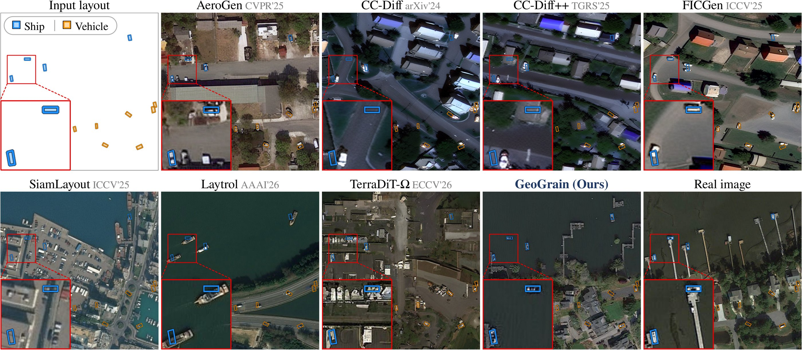
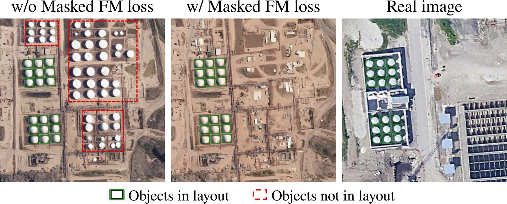
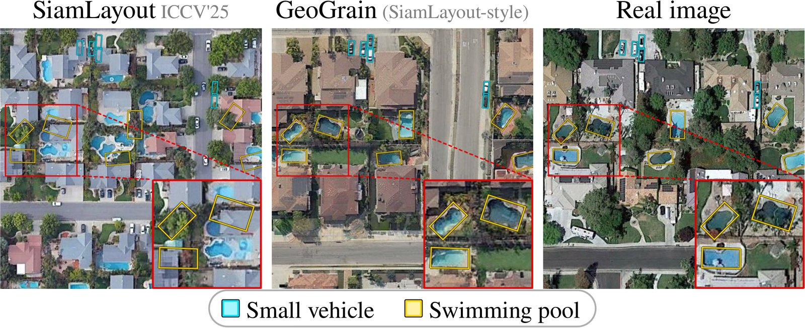
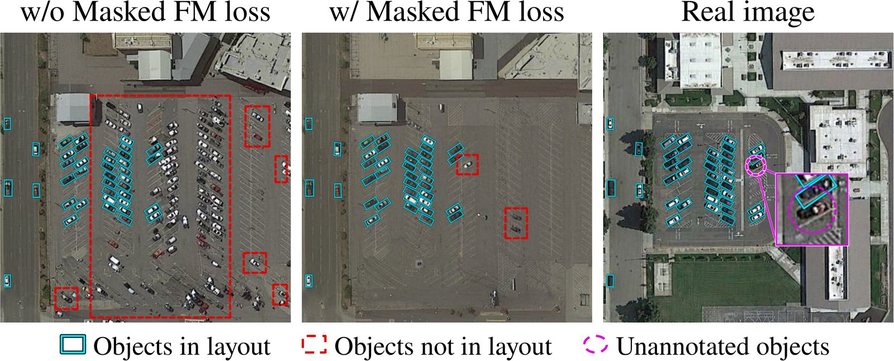

Small objects, exactly in their boxes
Given the same oriented-box layout, GeoGrain generates small objects that match the position, size and orientation of each box, where prior layout-to-image methods omit or misplace them.

Same layout, every method
Six examples on each of SODA-A, AI-TOD-R and DIOR-R: the input layout, seven baselines, GeoGrain and the real image, with the input OBBs overlaid on every image. Select an image to compare two results with a slider.
SODA-A: a large-scale benchmark for oriented small-object detection in aerial images; its examples include densely arranged airplanes, small vehicles and ships. Examples 1–6 are the paper’s Figs. 8–10.
AI-TOD-R: a benchmark dedicated to oriented tiny-object detection; its examples range from ships and vehicles to swimming pools, storage tanks and people. Examples 1–6 are the paper’s Figs. 11–13.
DIOR-R: a general remote sensing object detection benchmark, evaluated in the appendix (Tables 12–13); its examples extend the comparison to larger and more varied structures, including stadiums, sports courts, overpasses, storage tanks and harbors. Examples 1–6 are the paper’s Figs. 14–16.
Use or the arrow keys to change example · click an image to open the comparison sliderSwipe or use to change example · tap an image to open the comparison slider
Paper figures








Quantitative results
GeoGrain raises AP over the strongest baseline, TerraDiT-Ω, by 18.6 points on SODA-A and 6.3 on AI-TOD-R, reaching AP comparable to that of real images (29.6 vs 29.0 and 9.0 vs 9.1), with the best object-level SceneFID and SceneKID on both. Training detectors with its images adds +1.8 and +2.1 AP, against at most +0.2 and +0.4 for the baselines.
Main tables
| Method | Venue | Generation quality ↓ | Layout fidelity ↑ | |||||||||
|---|---|---|---|---|---|---|---|---|---|---|---|---|
| FID | KID | SceneFID | SceneKID | AP | AP50 | AP75 | AP by object size | |||||
| SODA-A Dataset | eS | rS | gS | N | ||||||||
| Real images | – | – | – | – | 29.0 | 67.4 | 18.3 | 6.6 | 22.5 | 38.9 | 36.4 | |
| AeroGen | CVPR'25 | 28.00 | 13.40 | 35.03 | 18.31 | 4.6 | 19.2 | 0.6 | 0.3 | 1.9 | 7.3 | 10.8 |
| CC-Diff | arXiv'24 | 45.37 | 29.97 | 48.71 | 27.77 | 2.3 | 10.0 | 0.2 | 0.0 | 0.4 | 3.4 | 7.0 |
| CC-Diff++ | TGRS'25 | 48.14 | 31.29 | 61.66 | 39.39 | 1.6 | 7.5 | 0.2 | 0.0 | 0.3 | 2.3 | 4.7 |
| FICGen | ICCV'25 | 47.97 | 31.24 | 41.90 | 25.24 | 6.5 | 25.6 | 0.9 | 0.2 | 1.9 | 10.3 | 16.8 |
| SiamLayout | ICCV'25 | 41.74 | 17.37 | 87.70 | 54.42 | 0.0 | 0.0 | 0.0 | 0.0 | 0.0 | 0.0 | 0.0 |
| Laytrol | AAAI'26 | 30.97 | 13.05 | 24.94 | 11.45 | 2.2 | 10.8 | 0.1 | 0.2 | 1.1 | 3.5 | 3.2 |
| TerraDiT-Ω | ECCV'26 | 20.59 | 9.95 | 16.01 | 8.37 | 11.0 | 34.8 | 3.4 | 0.8 | 6.7 | 18.1 | 19.4 |
| GeoGrain (Ours) | – | 10.24 | 2.71 | 8.85 | 5.52 | 29.6 | 71.1 | 17.3 | 6.2 | 22.5 | 39.7 | 39.3 |
| AI-TOD-R Dataset | vt | t | s | m | ||||||||
| Real images | – | – | – | – | 9.1 | 29.9 | 2.4 | 3.1 | 8.3 | 14.1 | 17.5 | |
| AeroGen | CVPR'25 | 54.32 | 22.72 | 40.24 | 31.38 | 1.3 | 5.2 | 0.3 | 0.1 | 0.6 | 2.3 | 5.4 |
| CC-Diff | arXiv'24 | 55.27 | 26.31 | 41.83 | 22.78 | 0.3 | 1.3 | 0.1 | 0.0 | 0.1 | 0.2 | 2.6 |
| CC-Diff++ | TGRS'25 | 64.36 | 34.89 | 42.70 | 25.45 | 0.2 | 1.0 | 0.0 | 0.0 | 0.0 | 0.2 | 2.2 |
| FICGen | ICCV'25 | 55.40 | 29.88 | 33.74 | 19.26 | 0.8 | 3.3 | 0.1 | 0.1 | 0.2 | 1.3 | 7.5 |
| SiamLayout | ICCV'25 | 96.60 | 55.82 | 50.72 | 34.17 | 0.0 | 0.0 | 0.0 | 0.0 | 0.0 | 0.0 | 0.0 |
| Laytrol | AAAI'26 | 37.28 | 12.08 | 18.10 | 10.35 | 0.3 | 1.7 | 0.0 | 0.1 | 0.2 | 0.5 | 1.6 |
| TerraDiT-Ω | ECCV'26 | 18.12 | 6.76 | 14.94 | 11.67 | 2.7 | 10.6 | 0.6 | 0.3 | 1.7 | 6.1 | 11.5 |
| GeoGrain (Ours) | – | 19.54 | 4.72 | 4.02 | 1.81 | 9.0 | 30.4 | 2.2 | 2.1 | 7.2 | 15.5 | 24.3 |
| Method | Trainability ↑ | |||||||
|---|---|---|---|---|---|---|---|---|
| AP | ΔAP | AP50 | AP75 | AP by object size | ||||
| SODA-A Dataset | eS | rS | gS | N | ||||
| Real only | 29.0 | – | 67.4 | 18.3 | 6.6 | 22.5 | 38.9 | 36.4 |
| AeroGen | 29.2 | +0.2 | 67.5 | 18.8 | 6.5 | 22.6 | 39.4 | 37.1 |
| CC-Diff | 28.4 | −0.6 | 66.4 | 17.6 | 6.2 | 21.7 | 38.0 | 35.7 |
| CC-Diff++ | 28.4 | −0.6 | 66.8 | 17.3 | 6.1 | 21.9 | 38.4 | 36.6 |
| FICGen | 29.1 | +0.1 | 67.4 | 18.4 | 6.4 | 22.4 | 39.9 | 36.8 |
| SiamLayout | 27.9 | −1.1 | 65.9 | 17.0 | 6.0 | 21.4 | 36.5 | 35.0 |
| Laytrol | 28.3 | −0.7 | 66.5 | 17.2 | 6.3 | 21.5 | 38.1 | 36.6 |
| TerraDiT-Ω | 28.5 | −0.5 | 66.5 | 18.0 | 6.0 | 21.7 | 38.1 | 36.0 |
| GeoGrain (Ours) | 30.8 | +1.8 | 69.4 | 20.9 | 7.4 | 23.8 | 40.5 | 37.8 |
| AI-TOD-R Dataset | vt | t | s | m | ||||
| Real only | 9.1 | – | 29.9 | 2.4 | 3.1 | 8.3 | 14.1 | 17.5 |
| AeroGen | 9.3 | +0.2 | 31.9 | 2.3 | 2.8 | 8.2 | 13.5 | 19.3 |
| CC-Diff | 8.5 | −0.6 | 28.7 | 2.4 | 2.6 | 7.8 | 12.3 | 18.8 |
| CC-Diff++ | 8.8 | −0.3 | 28.6 | 2.6 | 2.5 | 7.9 | 12.5 | 18.5 |
| FICGen | 8.9 | −0.2 | 29.4 | 2.5 | 2.9 | 8.2 | 12.7 | 20.1 |
| SiamLayout | 6.7 | −2.4 | 22.5 | 1.7 | 2.5 | 7.1 | 9.5 | 16.1 |
| Laytrol | 8.8 | −0.3 | 29.9 | 2.2 | 3.0 | 8.0 | 12.4 | 16.4 |
| TerraDiT-Ω | 9.5 | +0.4 | 31.0 | 2.4 | 3.4 | 8.4 | 14.2 | 19.4 |
| GeoGrain (Ours) | 11.2 | +2.1 | 35.8 | 3.3 | 4.2 | 10.2 | 16.1 | 21.7 |
| GAGE | GATE | Layout fidelity ↑ | ||||
|---|---|---|---|---|---|---|
| RoPE (ρLij) | Qij | Rij | AP | AP50 | AP75 | |
| no | no | no | no | 0.5 | 2.4 | 0.0 |
| yes | no | no | no | 2.9 | 13.8 | 0.2 |
| yes | yes | no | no | 18.9 | 54.2 | 7.3 |
| yes | no | yes | no | 18.9 | 54.3 | 7.4 |
| yes | yes | yes | no | 21.7 | 59.5 | 9.0 |
| yes | no | no | yes | 14.1 | 47.4 | 3.3 |
| yes | yes | yes | yes | 29.6 | 71.1 | 17.3 |
| Masked FM loss ℒMFM | Layout fidelity ↑ | Trainability ↑ | ||||
|---|---|---|---|---|---|---|
| AP | AP50 | AP75 | AP | AP50 | AP75 | |
| no | 24.8 | 59.9 | 14.1 | 30.3 | 68.6 | 20.1 |
| yes | 29.6 | 71.1 | 17.3 | 30.8 | 69.4 | 20.9 |
| Training data | # Images | Trainability ↑ | |||
|---|---|---|---|---|---|
| AP | ΔAP | AP50 | AP75 | ||
| Real 100% | 23,032 | 29.0 | – | 67.4 | 18.3 |
| + Synthetic 25% | +5,758 | 29.2 | +0.2 | 67.8 | 18.3 |
| + Synthetic 50% | +11,516 | 29.7 | +0.7 | 68.3 | 19.1 |
| + Synthetic 75% | +17,274 | 30.1 | +1.1 | 69.1 | 19.3 |
| + Synthetic 100% | +23,032 | 30.8 | +1.8 | 69.4 | 20.9 |
| + Synthetic 200% | +46,064 | 31.5 | +2.5 | 69.6 | 22.3 |
| Dataset | SODA-A | AI-TOD-R |
|---|---|---|
| Classes | 9 | 8 |
| Images (train / test) | 23,032 / 15,989 | 7,752 / 9,705 |
| Objects (train / test) | 347,884 / 300,158 | 131,274 / 154,083 |
| Object size (px) | 16.2 ± 7.4 | 10.8 ± 4.8 |
| Size range (px2) | eS0–144rS144–400gS400–1,024N1,024–2,000 | vt4–64t64–256s256–1,024m1,024–4,096 |
Other detectors and backbones Tables 8–9 · layout fidelity and trainability
| Method | SODA-A | AI-TOD-R | ||||||||||||
|---|---|---|---|---|---|---|---|---|---|---|---|---|---|---|
| AP | AP50 | AP75 | AP by object size | AP | AP50 | AP75 | AP by object size | |||||||
| eS | rS | gS | N | vt | t | s | m | |||||||
| DCFL w/ Oriented R-CNN (ResNet-50) | ||||||||||||||
| Real images | 35.2 | 75.2 | 26.7 | 11.4 | 28.6 | 43.9 | 40.1 | 12.5 | 40.7 | 3.4 | 4.6 | 12.1 | 16.7 | 21.3 |
| AeroGen | 4.9 | 19.7 | 0.8 | 0.4 | 1.9 | 7.7 | 11.8 | 1.5 | 6.2 | 0.3 | 0.2 | 0.6 | 2.7 | 7.3 |
| CC-Diff | 2.2 | 9.8 | 0.2 | 0.1 | 0.3 | 3.4 | 7.0 | 0.3 | 1.3 | 0.0 | 0.0 | 0.0 | 0.2 | 3.3 |
| CC-Diff++ | 1.5 | 7.0 | 0.1 | 0.1 | 0.3 | 2.1 | 5.0 | 0.2 | 0.9 | 0.0 | 0.0 | 0.0 | 0.1 | 2.3 |
| FICGen | 6.7 | 25.8 | 1.0 | 0.2 | 1.6 | 10.9 | 18.8 | 0.6 | 2.8 | 0.1 | 0.0 | 0.1 | 0.8 | 9.7 |
| SiamLayout | 0.0 | 0.0 | 0.0 | 0.0 | 0.0 | 0.0 | 0.0 | 0.0 | 0.0 | 0.0 | 0.0 | 0.0 | 0.0 | 0.0 |
| Laytrol | 2.2 | 10.2 | 0.4 | 0.3 | 1.1 | 3.3 | 3.1 | 0.4 | 1.6 | 0.1 | 0.2 | 0.2 | 0.4 | 1.9 |
| TerraDiT-Ω | 12.2 | 36.8 | 4.1 | 0.9 | 7.3 | 19.4 | 19.5 | 2.8 | 11.4 | 0.5 | 0.3 | 2.0 | 6.6 | 11.7 |
| GeoGrain (Ours) | 34.1 | 76.3 | 23.1 | 9.8 | 27.1 | 42.8 | 42.7 | 11.3 | 39.1 | 2.1 | 2.7 | 10.0 | 17.9 | 26.1 |
| Oriented R-CNN (ResNet-50) | ||||||||||||||
| Real images | 33.7 | 69.2 | 27.6 | 6.8 | 27.3 | 44.6 | 41.2 | 10.5 | 32.4 | 3.2 | 0.4 | 9.1 | 18.4 | 22.3 |
| AeroGen | 4.9 | 19.4 | 0.8 | 0.4 | 2.0 | 7.7 | 11.5 | 1.9 | 7.4 | 0.2 | 0.1 | 0.8 | 3.2 | 7.8 |
| CC-Diff | 2.2 | 9.3 | 0.2 | 0.1 | 0.3 | 3.3 | 6.7 | 0.3 | 1.2 | 0.1 | 0.0 | 0.0 | 0.3 | 3.3 |
| CC-Diff++ | 1.5 | 6.9 | 0.1 | 0.1 | 0.3 | 2.2 | 4.8 | 0.2 | 1.0 | 0.0 | 0.0 | 0.0 | 0.1 | 2.2 |
| FICGen | 6.5 | 25.4 | 1.0 | 0.2 | 1.7 | 10.4 | 18.5 | 0.7 | 3.2 | 0.1 | 0.0 | 0.2 | 1.1 | 9.6 |
| SiamLayout | 0.0 | 0.1 | 0.0 | 0.0 | 0.0 | 0.0 | 0.0 | 0.0 | 0.0 | 0.0 | 0.0 | 0.0 | 0.0 | 0.0 |
| Laytrol | 2.3 | 10.6 | 0.5 | 0.4 | 1.1 | 3.7 | 3.1 | 0.4 | 1.8 | 0.0 | 0.1 | 0.2 | 0.4 | 1.7 |
| TerraDiT-Ω | 11.8 | 35.0 | 4.2 | 0.8 | 6.8 | 19.2 | 20.1 | 3.2 | 12.0 | 0.6 | 0.1 | 1.8 | 7.2 | 13.1 |
| GeoGrain (Ours) | 33.1 | 71.1 | 24.3 | 6.2 | 26.2 | 44.0 | 43.6 | 10.7 | 33.4 | 2.7 | 0.3 | 8.4 | 19.8 | 28.6 |
| Oriented R-CNN (Swin-T) | ||||||||||||||
| Real images | 33.8 | 70.0 | 27.3 | 8.1 | 28.0 | 46.2 | 42.2 | 10.5 | 33.0 | 3.0 | 0.6 | 8.8 | 18.7 | 23.3 |
| AeroGen | 4.9 | 20.3 | 0.7 | 0.4 | 2.0 | 7.8 | 11.8 | 1.8 | 7.3 | 0.3 | 0.1 | 0.6 | 2.9 | 7.8 |
| CC-Diff | 2.1 | 9.1 | 0.2 | 0.1 | 0.2 | 3.0 | 6.5 | 0.3 | 1.4 | 0.1 | 0.0 | 0.0 | 0.3 | 3.3 |
| CC-Diff++ | 1.4 | 6.5 | 0.2 | 0.1 | 0.4 | 2.1 | 4.7 | 0.2 | 1.1 | 0.0 | 0.0 | 0.1 | 0.2 | 2.2 |
| FICGen | 6.3 | 25.0 | 0.8 | 0.2 | 1.6 | 10.0 | 18.0 | 0.8 | 3.2 | 0.2 | 0.0 | 0.1 | 1.3 | 9.2 |
| SiamLayout | 0.0 | 0.1 | 0.0 | 0.0 | 0.0 | 0.0 | 0.0 | 0.0 | 0.0 | 0.0 | 0.0 | 0.0 | 0.0 | 0.0 |
| Laytrol | 2.2 | 10.4 | 0.2 | 0.3 | 1.0 | 3.3 | 3.0 | 0.4 | 2.0 | 0.2 | 0.1 | 0.2 | 0.5 | 2.0 |
| TerraDiT-Ω | 11.7 | 35.1 | 4.1 | 0.8 | 6.7 | 18.9 | 19.0 | 3.2 | 12.3 | 0.6 | 0.1 | 1.7 | 6.9 | 13.3 |
| GeoGrain (Ours) | 33.2 | 71.9 | 24.3 | 7.4 | 27.1 | 43.2 | 43.3 | 11.2 | 35.7 | 2.9 | 0.4 | 8.5 | 20.3 | 28.9 |
| Method | SODA-A | AI-TOD-R | ||||||||||||||
|---|---|---|---|---|---|---|---|---|---|---|---|---|---|---|---|---|
| AP | ΔAP | AP50 | AP75 | AP by object size | AP | ΔAP | AP50 | AP75 | AP by object size | |||||||
| eS | rS | gS | N | vt | t | s | m | |||||||||
| DCFL w/ Oriented R-CNN (ResNet-50) | ||||||||||||||||
| Real only | 35.2 | – | 75.2 | 26.7 | 11.4 | 28.6 | 43.9 | 40.1 | 12.5 | – | 40.7 | 3.4 | 4.6 | 12.1 | 16.7 | 21.3 |
| AeroGen | 34.3 | −0.9 | 74.5 | 25.3 | 11.0 | 27.7 | 42.5 | 40.1 | 12.2 | −0.3 | 39.5 | 3.6 | 4.4 | 11.5 | 16.7 | 22.0 |
| CC-Diff | 34.2 | −1.0 | 74.1 | 25.2 | 11.2 | 27.8 | 42.3 | 38.9 | 12.5 | 0.0 | 40.4 | 3.4 | 4.7 | 11.9 | 17.3 | 21.3 |
| CC-Diff++ | 34.5 | −0.7 | 74.6 | 25.5 | 11.2 | 28.1 | 43.6 | 39.4 | 12.8 | +0.3 | 40.7 | 3.4 | 4.5 | 12.2 | 17.5 | 21.6 |
| FICGen | 34.4 | −0.8 | 74.4 | 25.5 | 11.2 | 28.0 | 43.6 | 38.8 | 12.9 | +0.4 | 41.6 | 3.4 | 4.7 | 12.3 | 17.1 | 22.1 |
| SiamLayout | 33.1 | −2.1 | 72.8 | 24.2 | 10.2 | 26.9 | 40.4 | 37.8 | 12.0 | −0.5 | 38.8 | 3.3 | 4.2 | 11.8 | 16.4 | 20.5 |
| Laytrol | 34.3 | −0.9 | 73.6 | 25.8 | 11.0 | 27.7 | 43.5 | 39.9 | 11.8 | −0.7 | 37.5 | 3.3 | 4.2 | 11.5 | 16.1 | 18.7 |
| TerraDiT-Ω | 33.6 | −1.6 | 72.3 | 25.3 | 10.4 | 26.9 | 40.1 | 39.4 | 12.4 | −0.1 | 40.2 | 3.7 | 4.7 | 11.9 | 17.5 | 22.2 |
| GeoGrain (Ours) | 35.7 | +0.5 | 75.8 | 27.5 | 12.4 | 29.5 | 44.0 | 40.6 | 14.0 | +1.5 | 44.1 | 4.7 | 5.1 | 13.5 | 18.9 | 23.2 |
| Oriented R-CNN (ResNet-50) | ||||||||||||||||
| Real only | 33.7 | – | 69.2 | 27.6 | 6.8 | 27.3 | 44.6 | 41.2 | 10.5 | – | 32.4 | 3.2 | 0.4 | 9.1 | 18.4 | 22.3 |
| AeroGen | 33.1 | −0.6 | 68.5 | 27.5 | 6.7 | 26.4 | 43.2 | 41.7 | 10.2 | −0.3 | 31.6 | 3.3 | 0.3 | 8.7 | 17.8 | 21.4 |
| CC-Diff | 33.2 | −0.5 | 69.0 | 26.5 | 6.5 | 26.9 | 44.4 | 40.9 | 9.7 | −0.8 | 29.8 | 2.9 | 0.6 | 8.2 | 17.8 | 21.3 |
| CC-Diff++ | 33.2 | −0.5 | 68.9 | 26.8 | 6.4 | 27.0 | 44.7 | 40.8 | 9.4 | −1.1 | 29.3 | 2.7 | 0.5 | 7.9 | 17.5 | 21.0 |
| FICGen | 33.1 | −0.6 | 68.8 | 26.4 | 6.5 | 26.7 | 44.6 | 40.9 | 9.8 | −0.7 | 30.4 | 2.9 | 0.5 | 8.1 | 18.3 | 21.7 |
| SiamLayout | 32.3 | −1.4 | 67.9 | 25.5 | 6.2 | 26.3 | 42.1 | 39.7 | 8.1 | −2.4 | 24.6 | 2.6 | 0.3 | 6.8 | 15.8 | 18.9 |
| Laytrol | 33.2 | −0.5 | 68.7 | 26.5 | 6.6 | 26.6 | 44.2 | 41.5 | 9.1 | −1.4 | 28.4 | 2.6 | 0.5 | 7.8 | 16.7 | 19.0 |
| TerraDiT-Ω | 32.0 | −1.7 | 67.5 | 24.9 | 6.3 | 25.4 | 41.4 | 40.3 | 10.1 | −0.4 | 31.2 | 3.0 | 0.4 | 8.6 | 18.7 | 21.6 |
| GeoGrain (Ours) | 34.2 | +0.5 | 69.7 | 28.4 | 7.3 | 27.8 | 45.2 | 42.0 | 11.4 | +0.9 | 34.2 | 3.9 | 0.8 | 9.8 | 20.1 | 24.1 |
| Oriented R-CNN (Swin-T) | ||||||||||||||||
| Real only | 33.8 | – | 70.0 | 27.3 | 8.1 | 28.0 | 46.2 | 42.2 | 10.5 | – | 33.0 | 3.0 | 0.6 | 8.8 | 18.7 | 23.3 |
| AeroGen | 33.8 | 0.0 | 70.4 | 26.7 | 8.1 | 27.6 | 44.8 | 41.8 | 10.1 | −0.4 | 31.0 | 2.9 | 0.4 | 8.4 | 17.8 | 23.2 |
| CC-Diff | 33.5 | −0.3 | 70.2 | 26.1 | 7.8 | 27.5 | 45.8 | 41.1 | 9.7 | −0.8 | 29.8 | 2.7 | 0.4 | 8.0 | 17.5 | 22.5 |
| CC-Diff++ | 33.6 | −0.2 | 70.7 | 26.3 | 7.9 | 28.0 | 45.8 | 41.0 | 9.5 | −1.0 | 29.8 | 2.6 | 0.5 | 8.0 | 17.3 | 22.2 |
| FICGen | 33.9 | +0.1 | 70.7 | 27.1 | 7.9 | 27.8 | 46.2 | 41.4 | 9.7 | −0.8 | 30.3 | 2.6 | 0.6 | 8.0 | 17.6 | 22.4 |
| SiamLayout | 33.6 | −0.2 | 69.9 | 26.8 | 7.9 | 27.6 | 44.8 | 41.1 | 9.0 | −1.5 | 28.6 | 2.4 | 0.5 | 7.5 | 16.4 | 20.4 |
| Laytrol | 33.5 | −0.3 | 70.1 | 26.3 | 7.9 | 27.6 | 45.7 | 41.9 | 9.2 | −1.3 | 28.7 | 2.6 | 0.4 | 7.9 | 17.1 | 20.9 |
| TerraDiT-Ω | 33.6 | −0.2 | 70.4 | 26.4 | 7.9 | 27.7 | 43.9 | 42.0 | 10.2 | −0.3 | 31.7 | 3.1 | 0.4 | 8.4 | 18.3 | 21.7 |
| GeoGrain (Ours) | 34.7 | +0.9 | 70.9 | 28.9 | 8.4 | 28.9 | 47.3 | 42.6 | 11.0 | +0.5 | 33.2 | 3.9 | 0.7 | 9.4 | 19.3 | 24.2 |
Class-wise results Tables 10–11 · SODA-A and AI-TOD-R
| Method | AP | AP by class | ||||||||
|---|---|---|---|---|---|---|---|---|---|---|
| APL | HEL | SV | LV | SH | CT | ST | SP | WM | ||
| Layout fidelity ↑ | ||||||||||
| Real images | 29.0 | 46.3 | 27.3 | 21.1 | 17.9 | 27.0 | 30.3 | 36.1 | 34.1 | 20.8 |
| AeroGen | 4.6 | 7.9 | 6.4 | 0.7 | 2.0 | 3.3 | 4.0 | 7.9 | 6.2 | 2.7 |
| CC-Diff | 2.3 | 1.8 | 5.1 | 0.1 | 0.5 | 0.3 | 1.5 | 0.7 | 6.7 | 3.7 |
| CC-Diff++ | 1.6 | 1.1 | 4.2 | 0.1 | 0.4 | 0.3 | 1.4 | 0.3 | 4.0 | 2.3 |
| FICGen | 6.5 | 7.0 | 10.6 | 0.5 | 3.3 | 1.6 | 4.5 | 5.9 | 17.2 | 7.8 |
| SiamLayout | 0.0 | 0.0 | 0.0 | 0.0 | 0.0 | 0.0 | 0.0 | 0.0 | 0.0 | 0.0 |
| Laytrol | 2.2 | 3.3 | 5.9 | 0.8 | 0.6 | 2.0 | 2.2 | 2.1 | 1.7 | 1.4 |
| TerraDiT-Ω | 11.0 | 14.3 | 5.8 | 5.0 | 2.6 | 11.2 | 15.3 | 20.4 | 18.3 | 6.2 |
| GeoGrain (Ours) | 29.6 | 43.8 | 28.3 | 22.0 | 19.9 | 31.8 | 30.8 | 36.8 | 33.6 | 19.8 |
| Trainability ↑ | ||||||||||
| Real only | 29.0 | 46.3 | 27.3 | 21.1 | 17.9 | 27.0 | 30.3 | 36.1 | 34.1 | 20.8 |
| AeroGen | 29.2 | 46.8 | 27.6 | 21.0 | 18.0 | 28.3 | 30.4 | 35.6 | 34.1 | 20.5 |
| CC-Diff | 28.4 | 45.8 | 26.4 | 20.8 | 17.3 | 25.9 | 29.3 | 35.9 | 33.8 | 20.8 |
| CC-Diff++ | 28.4 | 45.5 | 25.7 | 21.1 | 17.5 | 27.0 | 28.9 | 35.6 | 33.6 | 20.8 |
| FICGen | 29.1 | 46.4 | 26.6 | 21.4 | 17.9 | 28.1 | 29.4 | 36.1 | 34.8 | 20.8 |
| SiamLayout | 27.9 | 45.2 | 24.5 | 20.4 | 16.0 | 28.5 | 28.9 | 34.4 | 33.7 | 19.6 |
| Laytrol | 28.3 | 45.7 | 26.6 | 20.4 | 17.6 | 25.7 | 29.5 | 35.6 | 33.4 | 20.5 |
| TerraDiT-Ω | 28.5 | 45.8 | 25.9 | 20.9 | 16.7 | 26.3 | 31.0 | 36.4 | 34.3 | 19.7 |
| GeoGrain (Ours) | 30.8 | 48.2 | 28.0 | 23.1 | 20.6 | 29.6 | 33.6 | 37.6 | 35.4 | 21.2 |
APL: airplane; HEL: helicopter; SV/LV: small/large vehicle; SH: ship; CT: container; ST: storage tank; SP: swimming pool; WM: windmill.
| Method | AP | AP by class | |||||||
|---|---|---|---|---|---|---|---|---|---|
| APL | BR | ST | SH | SP | VE | PE | WM | ||
| Layout fidelity ↑ | |||||||||
| Real images | 9.1 | 9.9 | 4.3 | 12.9 | 17.5 | 11.2 | 12.8 | 3.8 | 0.2 |
| AeroGen | 1.3 | 3.7 | 0.9 | 1.3 | 1.3 | 2.1 | 0.8 | 0.2 | 0.0 |
| CC-Diff | 0.3 | 1.7 | 0.0 | 0.1 | 0.2 | 0.0 | 0.1 | 0.1 | 0.0 |
| CC-Diff++ | 0.2 | 1.0 | 0.0 | 0.1 | 0.1 | 0.0 | 0.1 | 0.4 | 0.0 |
| FICGen | 0.8 | 3.5 | 0.0 | 1.0 | 0.7 | 0.1 | 0.6 | 0.2 | 0.0 |
| SiamLayout | 0.0 | 0.0 | 0.0 | 0.0 | 0.0 | 0.0 | 0.0 | 0.0 | 0.0 |
| Laytrol | 0.3 | 1.0 | 0.1 | 1.0 | 0.1 | 0.2 | 0.3 | 0.1 | 0.0 |
| TerraDiT-Ω | 2.7 | 2.3 | 0.9 | 6.4 | 3.5 | 5.9 | 2.3 | 0.7 | 0.0 |
| GeoGrain (Ours) | 9.0 | 11.6 | 3.9 | 13.9 | 13.5 | 12.7 | 11.6 | 4.3 | 0.3 |
| Trainability ↑ | |||||||||
| Real only | 9.1 | 9.9 | 4.3 | 12.9 | 17.5 | 11.2 | 12.8 | 3.8 | 0.2 |
| AeroGen | 9.3 | 11.1 | 5.2 | 11.7 | 16.3 | 11.7 | 12.0 | 3.5 | 2.8 |
| CC-Diff | 8.5 | 9.5 | 5.6 | 10.4 | 15.7 | 11.3 | 11.8 | 3.6 | 0.3 |
| CC-Diff++ | 8.8 | 9.9 | 5.3 | 11.5 | 15.9 | 10.7 | 12.1 | 3.7 | 1.0 |
| FICGen | 8.9 | 9.3 | 5.7 | 12.2 | 15.8 | 11.7 | 12.0 | 3.8 | 0.9 |
| SiamLayout | 6.7 | 1.3 | 5.6 | 9.1 | 15.4 | 7.3 | 11.9 | 2.9 | 0.2 |
| Laytrol | 8.8 | 10.6 | 4.2 | 11.5 | 15.2 | 11.1 | 11.6 | 3.4 | 2.6 |
| TerraDiT-Ω | 9.5 | 11.2 | 4.4 | 13.6 | 16.7 | 12.5 | 12.7 | 3.5 | 1.2 |
| GeoGrain (Ours) | 11.2 | 13.8 | 5.7 | 15.1 | 18.6 | 14.5 | 14.2 | 4.5 | 3.6 |
APL: airplane; BR: bridge; ST: storage tank; SH: ship; SP: swimming pool; VE: vehicle; PE: person; WM: windmill.
DIOR-R Tables 12–13 · generation quality, layout fidelity and trainability
| Method | Generation quality ↓ | Layout fidelity ↑ | ||||||||||||||
|---|---|---|---|---|---|---|---|---|---|---|---|---|---|---|---|---|
| FID | KID | SceneFID | SceneKID | DCFL w/ Rotated RetinaNet (ResNet-50) | DCFL w/ Oriented R-CNN (ResNet-50) | Oriented R-CNN (ResNet-50) | Oriented R-CNN (Swin-T) | |||||||||
| AP | AP50 | AP75 | AP | AP50 | AP75 | AP | AP50 | AP75 | AP | AP50 | AP75 | |||||
| Real images | – | – | – | – | 28.04 | 50.77 | 26.38 | 30.42 | 52.22 | 31.34 | 31.86 | 52.32 | 32.80 | 33.49 | 55.06 | 34.77 |
| AeroGen | 26.77 | 12.99 | 25.56 | 10.04 | 16.33 | 33.15 | 14.42 | 16.49 | 32.11 | 15.34 | 17.71 | 33.69 | 15.94 | 18.20 | 34.37 | 18.12 |
| CC-Diff | 47.87 | 28.31 | 56.78 | 30.53 | 19.86 | 38.10 | 17.95 | 20.45 | 37.90 | 19.52 | 21.75 | 39.76 | 21.12 | 22.45 | 39.97 | 22.15 |
| CC-Diff++ | 47.73 | 27.87 | 60.66 | 33.44 | 20.19 | 38.43 | 18.79 | 20.45 | 38.04 | 19.87 | 22.00 | 39.73 | 22.14 | 22.86 | 40.74 | 23.19 |
| FICGen | 45.61 | 24.91 | 44.27 | 20.19 | 24.93 | 45.35 | 24.42 | 25.68 | 44.75 | 25.89 | 27.59 | 46.74 | 28.75 | 29.16 | 49.22 | 30.77 |
| SiamLayout | 54.84 | 18.52 | 83.89 | 48.27 | 0.44 | 1.59 | 0.17 | 0.46 | 1.55 | 0.19 | 0.64 | 2.47 | 0.08 | 0.37 | 1.56 | 0.09 |
| Laytrol | 27.55 | 9.44 | 25.65 | 10.06 | 18.63 | 42.46 | 14.47 | 18.54 | 42.09 | 13.83 | 18.93 | 42.71 | 14.45 | 19.81 | 44.34 | 15.54 |
| TerraDiT-Ω | 17.46 | 8.03 | 16.83 | 6.47 | 23.60 | 45.01 | 21.59 | 25.01 | 45.17 | 23.33 | 26.15 | 45.60 | 25.91 | 26.92 | 46.79 | 27.20 |
| GeoGrain (Ours) | 11.82 | 2.26 | 6.96 | 1.80 | 29.66 | 54.69 | 27.76 | 32.27 | 55.84 | 32.30 | 33.48 | 55.70 | 34.26 | 34.45 | 58.15 | 35.28 |
| Method | DCFL w/ Rotated RetinaNet (ResNet-50) | DCFL w/ Oriented R-CNN (ResNet-50) | Oriented R-CNN (ResNet-50) | Oriented R-CNN (Swin-T) | ||||||||||||
|---|---|---|---|---|---|---|---|---|---|---|---|---|---|---|---|---|
| AP | ΔAP | AP50 | AP75 | AP | ΔAP | AP50 | AP75 | AP | ΔAP | AP50 | AP75 | AP | ΔAP | AP50 | AP75 | |
| Real only | 28.04 | – | 50.77 | 26.38 | 30.42 | – | 52.22 | 31.34 | 31.86 | – | 52.32 | 32.80 | 33.49 | – | 55.06 | 34.77 |
| AeroGen | 29.35 | +1.31 | 52.44 | 28.03 | 32.11 | +1.69 | 53.76 | 32.48 | 32.46 | +0.60 | 51.70 | 33.64 | 33.96 | +0.47 | 54.53 | 35.70 |
| CC-Diff | 29.40 | +1.36 | 52.01 | 28.25 | 32.15 | +1.73 | 54.30 | 33.15 | 33.02 | +1.16 | 53.19 | 34.29 | 33.74 | +0.25 | 54.58 | 34.99 |
| CC-Diff++ | 29.08 | +1.04 | 51.88 | 27.78 | 32.05 | +1.63 | 53.87 | 32.48 | 32.64 | +0.78 | 52.50 | 33.96 | 33.48 | −0.01 | 54.19 | 34.53 |
| FICGen | 29.63 | +1.59 | 51.87 | 28.27 | 32.23 | +1.81 | 53.71 | 33.24 | 33.12 | +1.26 | 52.52 | 34.33 | 34.07 | +0.58 | 54.19 | 35.48 |
| SiamLayout | 26.33 | −1.71 | 49.04 | 24.52 | 29.03 | −1.39 | 50.68 | 29.69 | 29.88 | −1.98 | 49.70 | 30.58 | 32.03 | −1.46 | 52.79 | 32.92 |
| Laytrol | 28.82 | +0.78 | 51.85 | 27.22 | 31.57 | +1.15 | 53.59 | 32.33 | 32.81 | +0.95 | 53.01 | 33.65 | 33.80 | +0.31 | 54.99 | 34.88 |
| TerraDiT-Ω | 30.14 | +2.10 | 53.29 | 29.71 | 32.57 | +2.15 | 54.30 | 33.30 | 33.68 | +1.82 | 53.96 | 34.80 | 34.40 | +0.91 | 55.19 | 35.80 |
| GeoGrain (Ours) | 31.56 | +3.52 | 54.94 | 31.08 | 34.15 | +3.73 | 56.75 | 34.65 | 34.96 | +3.10 | 55.35 | 36.08 | 36.00 | +2.51 | 58.04 | 37.81 |
Inference time Table 14
| Method | Steps | Time (s/image) ↓ | ||
|---|---|---|---|---|
| SODA-A | AI-TOD-R | DIOR-R | ||
| U-Net-based | ||||
| AeroGen | 50 | 3.05 | 2.95 | 2.81 |
| CC-Diff | 50 | 2.83 | 2.76 | 2.66 |
| CC-Diff++ | 50 | 2.87 | 2.78 | 2.70 |
| FICGen | 50 | 3.79 | 3.66 | 3.47 |
| DiT-based | ||||
| SiamLayout | 50 | 4.10 | 3.95 | 3.79 |
| Laytrol | 50 | 2.98 | 2.95 | 2.91 |
| TerraDiT-Ω | 100 | 9.83 | 9.49 | 9.38 |
| GeoGrain (Ours) | 50 | 5.18 | 4.97 | 4.68 |
More ablations Tables 15–18 · architecture, token expansion, positional encoding, decoding
| Method | Generation quality ↓ | Layout fidelity ↑ | Trainability ↑ | |||||||||||||
|---|---|---|---|---|---|---|---|---|---|---|---|---|---|---|---|---|
| FID | KID | SceneFID | SceneKID | DCFL | Oriented R-CNN | DCFL | Oriented R-CNN | |||||||||
| AP | AP50 | AP75 | AP | AP50 | AP75 | AP | AP50 | AP75 | AP | AP50 | AP75 | |||||
| SiamLayout | 41.74 | 17.37 | 87.70 | 54.42 | 0.0 | 0.0 | 0.0 | 0.0 | 0.1 | 0.0 | 27.9 | 65.9 | 17.0 | 33.6 | 69.9 | 26.8 |
| GeoGrain (SiamLayout-style) | 11.12 | 2.89 | 9.21 | 5.50 | 28.1 | 69.2 | 15.6 | 31.4 | 69.7 | 21.7 | 30.7 | 69.3 | 20.8 | 34.6 | 70.8 | 28.4 |
| GeoGrain (Laytrol-style) | 10.24 | 2.71 | 8.85 | 5.52 | 29.6 | 71.1 | 17.3 | 33.2 | 71.9 | 24.3 | 30.8 | 69.4 | 20.9 | 34.7 | 70.9 | 28.9 |
| Variant | Generation quality ↓ | Layout fidelity ↑ | Inference cost ↓ | |||||||||
|---|---|---|---|---|---|---|---|---|---|---|---|---|
| FID | KID | SceneFID | SceneKID | DCFL | Oriented R-CNN | # Tokens | Time (s/image) | |||||
| AP | AP50 | AP75 | AP | AP50 | AP75 | |||||||
| w/o GATE (uniform 1×) | 10.31 | 2.41 | 12.18 | 6.20 | 21.7 | 59.5 | 9.0 | 23.1 | 59.3 | 11.6 | 1,024 | 3.89 |
| w/o GATE (uniform 2×) | 17.15 | 5.97 | 17.08 | 10.73 | 25.5 | 64.7 | 12.9 | 28.3 | 65.7 | 18.3 | 4,096 | 12.29 |
| w/ GATE (mixed resolution) | 10.24 | 2.71 | 8.85 | 5.52 | 29.6 | 71.1 | 17.3 | 33.2 | 71.9 | 24.3 | 1,189 | 5.18 |
| Variant | Generation quality ↓ | Layout fidelity (AP) ↑ | ||||
|---|---|---|---|---|---|---|
| FID | KID | SceneFID | SceneKID | DCFL | Oriented R-CNN | |
| SODA-A | ||||||
| w/ PMA | 10.38 | 2.56 | 11.90 | 7.79 | 28.4 | 32.2 |
| w/o PMA (Ours) | 10.24 | 2.71 | 8.85 | 5.52 | 29.6 | 33.2 |
| AI-TOD-R | ||||||
| w/ PMA | 20.30 | 5.24 | 8.50 | 4.61 | 9.0 | 10.9 |
| w/o PMA (Ours) | 19.54 | 4.72 | 4.02 | 1.81 | 9.0 | 11.2 |
| Output | Generation quality ↓ | Layout fidelity ↑ | Time (s/image) ↓ | ||||||
|---|---|---|---|---|---|---|---|---|---|
| FID | KID | SceneFID | SceneKID | AP | AP50 | AP75 | Decoding | Overall inference | |
| SODA-A | |||||||||
| Initial reconstruction x̂init | 12.20 | 3.98 | 54.62 | 41.54 | 12.8 | 33.2 | 6.7 | 0.02 | 4.97 |
| Fine reconstruction x̂f | 10.51 | 2.90 | 9.18 | 5.89 | 33.2 | 72.2 | 24.2 | 0.19 | 5.13 |
| Final image x̂ | 10.24 | 2.71 | 8.85 | 5.52 | 33.2 | 71.9 | 24.3 | 0.23 | 5.18 |
| AI-TOD-R | |||||||||
| Initial reconstruction x̂init | 22.46 | 7.10 | 52.13 | 39.07 | 4.8 | 16.2 | 0.9 | 0.02 | 4.76 |
| Fine reconstruction x̂f | 20.80 | 5.02 | 4.02 | 1.82 | 11.0 | 34.9 | 3.0 | 0.19 | 4.93 |
| Final image x̂ | 19.54 | 4.72 | 4.02 | 1.81 | 11.2 | 35.7 | 2.9 | 0.23 | 4.97 |
Trainability at a fixed budget Tables 19–20 · fixed image count and fixed iteration count
| Training data | Trainability ↑ | |||||
|---|---|---|---|---|---|---|
| DCFL | Oriented R-CNN | |||||
| AP | AP50 | AP75 | AP | AP50 | AP75 | |
| SODA-A (23,032 training images) | ||||||
| Real 100% | 29.0 | 67.4 | 18.3 | 33.8 | 70.0 | 27.3 |
| Synthetic 100% | 25.7 | 61.6 | 15.1 | 21.3 | 49.9 | 13.9 |
| Real 50% + Synthetic 50% | 28.8 | 66.8 | 18.3 | 33.1 | 69.4 | 26.3 |
| AI-TOD-R (7,752 training images) | ||||||
| Real 100% | 9.1 | 29.9 | 2.4 | 10.5 | 33.0 | 3.0 |
| Synthetic 100% | 7.8 | 25.7 | 2.2 | 5.8 | 18.6 | 1.7 |
| Real 50% + Synthetic 50% | 8.7 | 28.5 | 2.4 | 10.0 | 31.2 | 3.0 |
| Training data | # Images | Epochs | Trainability ↑ | |||||||||||
|---|---|---|---|---|---|---|---|---|---|---|---|---|---|---|
| DCFL | Oriented R-CNN | |||||||||||||
| w/ detector aug. | w/o detector aug. | w/ detector aug. | w/o detector aug. | |||||||||||
| AP | AP50 | AP75 | AP | AP50 | AP75 | AP | AP50 | AP75 | AP | AP50 | AP75 | |||
| SODA-A | ||||||||||||||
| Real 100% | 23,032 | 12 | 29.0 | 67.4 | 18.3 | 28.6 | 65.8 | 19.2 | 33.8 | 70.0 | 27.3 | 32.9 | 67.1 | 27.9 |
| Real 100% | 23,032 | 24 | 30.4 | 69.0 | 20.4 | 29.2 | 65.8 | 20.4 | 33.9 | 70.4 | 27.1 | 32.0 | 65.6 | 27.0 |
| Real 100% + Synthetic 100% | 23,032 + 23,032 | 12 | 30.8 | 69.4 | 20.9 | 31.1 | 68.5 | 22.5 | 34.7 | 70.9 | 28.9 | 34.0 | 68.2 | 29.8 |
| Real 50% | 11,516 | 12 | 26.1 | 63.0 | 14.9 | 25.8 | 61.8 | 15.4 | 32.2 | 68.9 | 24.7 | 31.3 | 65.6 | 25.4 |
| Real 50% | 11,516 | 24 | 28.4 | 66.7 | 17.8 | 26.4 | 62.2 | 16.6 | 32.8 | 68.8 | 26.2 | 30.6 | 64.1 | 24.7 |
| Real 50% + Synthetic 50% | 11,516 + 11,516 | 12 | 28.8 | 66.8 | 18.3 | 28.0 | 64.8 | 18.4 | 33.1 | 69.4 | 26.3 | 32.1 | 66.4 | 26.4 |
| AI-TOD-R | ||||||||||||||
| Real 100% | 7,752 | 12 | 9.1 | 29.9 | 2.4 | 9.0 | 29.2 | 2.8 | 10.5 | 33.0 | 3.0 | 9.3 | 28.9 | 2.8 |
| Real 100% | 7,752 | 24 | 10.9 | 35.3 | 3.2 | 9.7 | 32.3 | 2.9 | 10.9 | 32.9 | 3.8 | 8.7 | 26.8 | 3.3 |
| Real 100% + Synthetic 100% | 7,752 + 7,752 | 12 | 11.2 | 35.8 | 3.3 | 10.7 | 34.4 | 3.2 | 11.0 | 33.2 | 3.9 | 9.7 | 30.5 | 3.0 |
| Real 50% | 3,876 | 12 | 5.7 | 19.5 | 1.3 | 6.0 | 20.5 | 1.6 | 9.1 | 28.9 | 2.2 | 7.5 | 24.3 | 2.0 |
| Real 50% | 3,876 | 24 | 8.3 | 27.8 | 2.2 | 7.9 | 26.3 | 2.0 | 9.5 | 29.4 | 2.7 | 7.1 | 22.5 | 2.4 |
| Real 50% + Synthetic 50% | 3,876 + 3,876 | 12 | 8.7 | 28.5 | 2.4 | 8.7 | 29.3 | 2.1 | 10.0 | 31.2 | 3.0 | 8.2 | 25.9 | 2.5 |
Finer geometry, finer tokens
GeoGrain builds on a pretrained text-to-image diffusion transformer, FLUX.2 [klein] 4B Base, with a frozen image–text branch and a trainable image–layout branch, and changes how the layout meets the image tokens.

- 01GAGE: a layout token per box and cell. For every image-token cell that an OBB overlaps, the layout token combines the class, the global OBB, the part of the box inside the cell (Qij) and the cell’s position relative to the object (Rij), and shares its RoPE position with that image token.
- 02GATE: finer image tokens where the objects are. Grid cells that overlap an input OBB are split into 2×2 fine tokens, and coarse tokens are kept elsewhere; both are denoised together on this mixed-resolution grid.
- 03Masked flow-matching loss. Training layouts hold at most n objects; the loss skips cells covered only by annotated objects left out of the layout, so the model does not learn to add objects that the layout does not ask for.
![Architecture diagram. (a) The text prompt and the image tokens pass through frozen image-text blocks, the layout tokens through trainable image-layout blocks, with zero-initialized links between them; training uses the masked flow-matching loss. (b) GAGE: class, OBB, the box part inside each cell and the cell position relative to the object are Fourier-encoded and merged by MLPs into one layout token per box-cell pair. (c) GATE: cells under a box are split into four fine tokens; at inference, coarse and fine grids are decoded and blended.](static/images/framework_full.jpg)
BibTeX
@article{kim2026geograin,
title={GeoGrain: Granularity-Aware Layout-to-Image Generation for Small Objects in Remote Sensing Imagery},
author={Kim, Taehwan and Do, Jeonghyeok and Kim, Munchurl},
journal={arXiv preprint arXiv:XXXX.XXXXX},
year={2026}
}